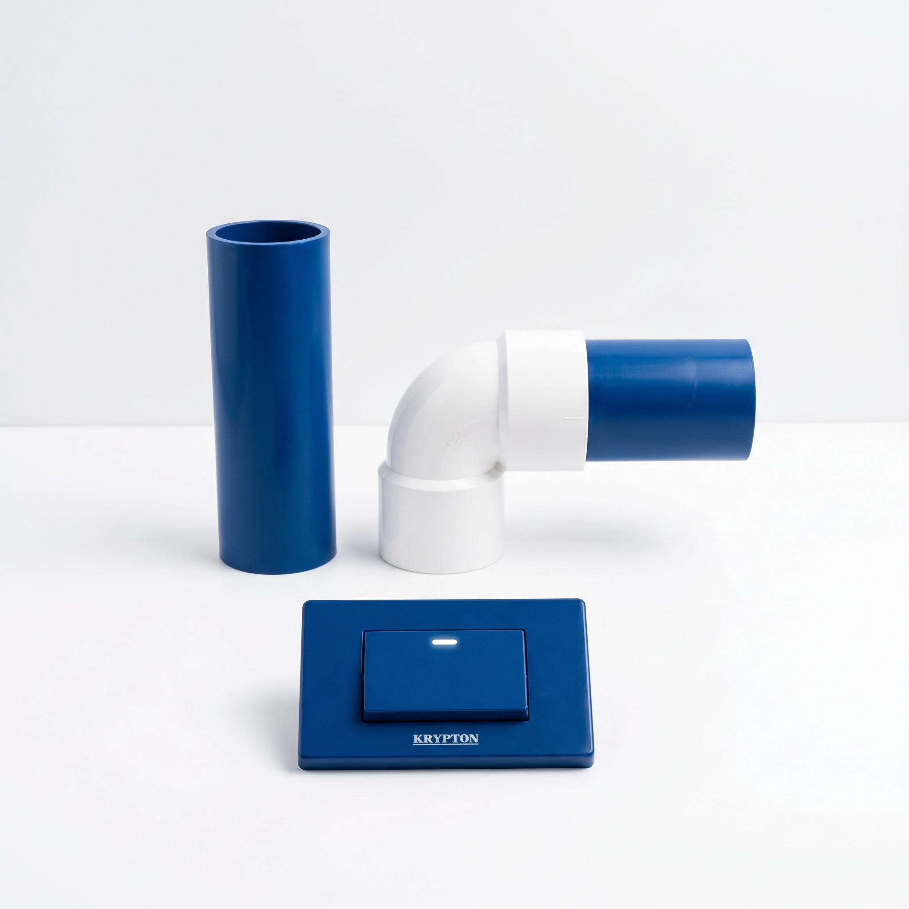
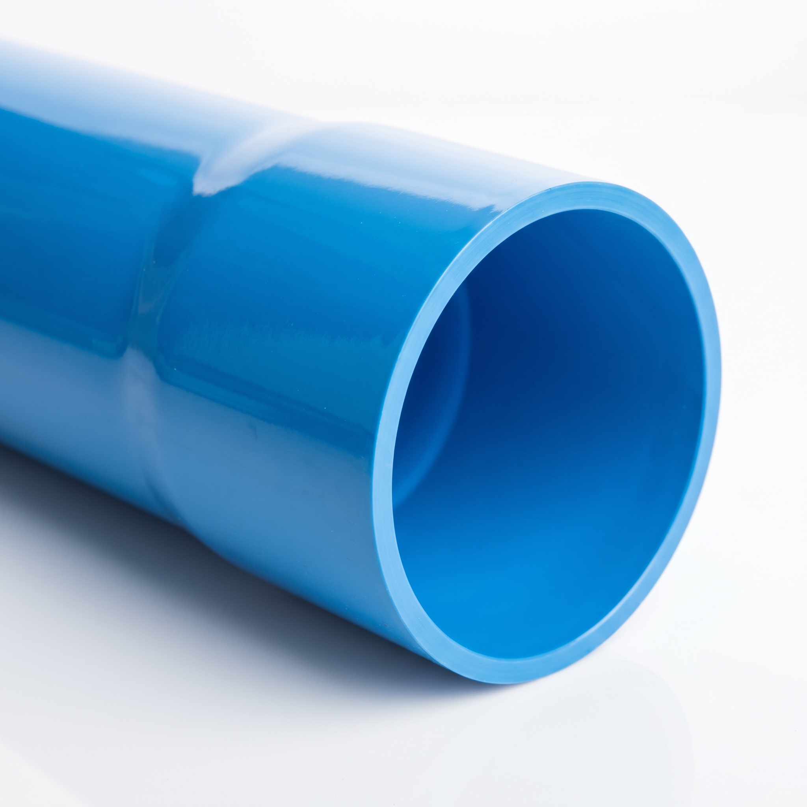
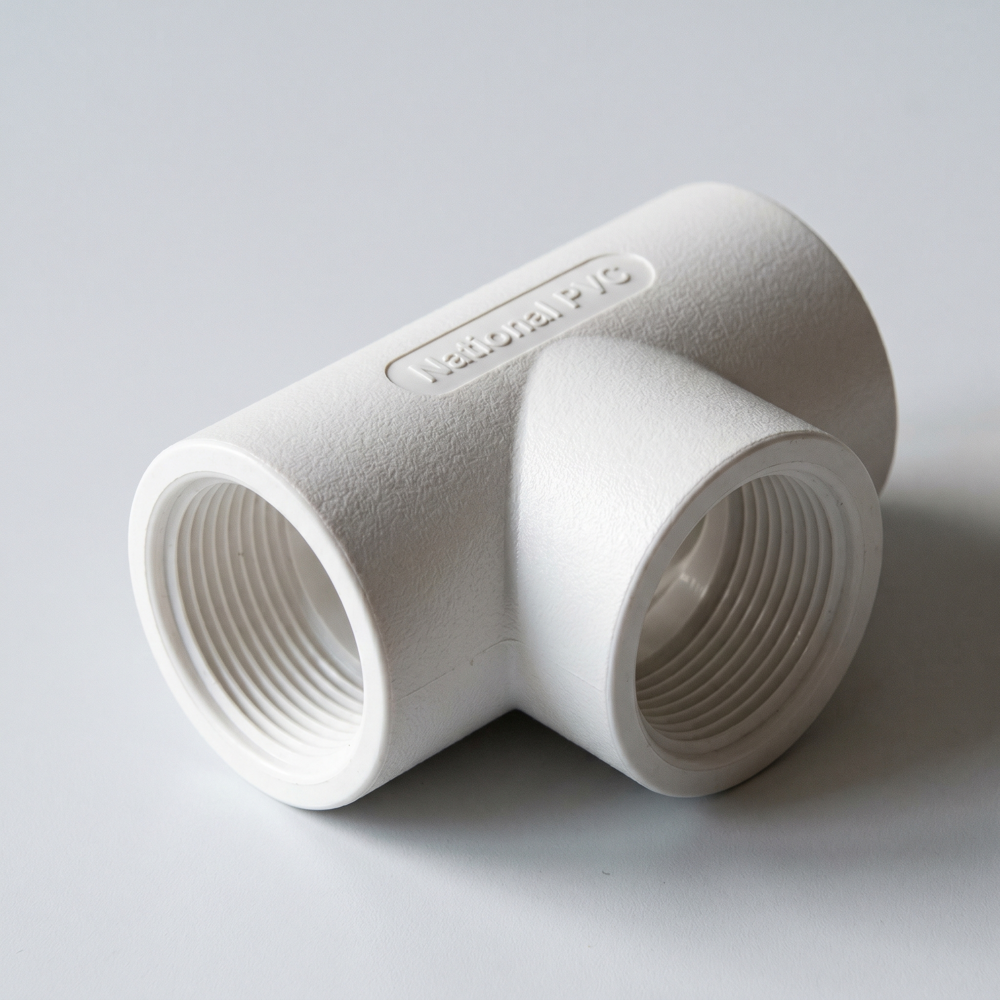
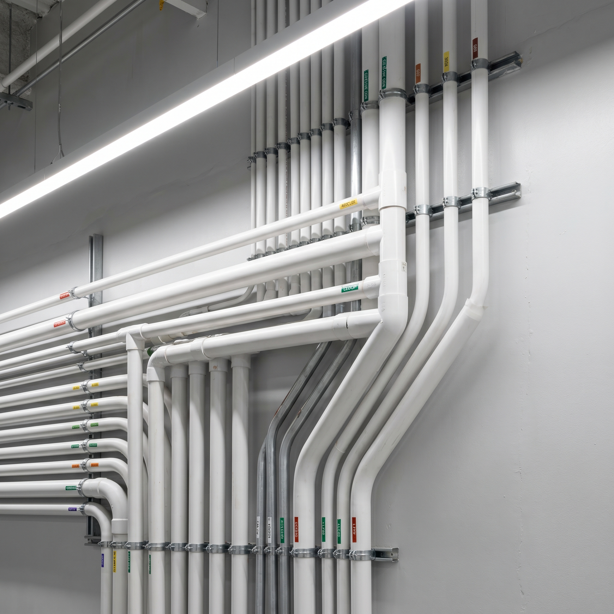

About National PVC
Three decades of engineering excellence, building trust pipe by pipe.
From Humble Beginnings to Industry Leadership
Founded in 1985, National PVC Pipe has grown from a small manufacturing unit to one of the Region's most trusted names in the PVC pipe industry. Our commitment to quality, innovation, and customer satisfaction has driven every decision we've made along the way. Today, our products are used in homes, commercial buildings, industrial facilities, and infrastructure projects across the region.
Company Milestones
Company Founded
National PVC Pipe established with a single production line and a vision for quality.
ISO Certification
Achieved ISO 9001:2000 certification, marking our commitment to international quality standards.
New Manufacturing Facility
State-of-the-art 50,000 sq. ft. plant commissioned with automated extrusion lines.
National Distribution Network
Expanded to 500+ distributors across all 4 provinces, reaching every corner of Pakistan.
Advanced R&D Center
Inaugurated dedicated research and development center for product innovation.
Industry Leader
Recognized as a top PVC pipe manufacturer with 1000+ completed projects nationwide.
Our Manufacturing Process
Every pipe goes through a rigorous, technology-driven manufacturing process to ensure unmatched quality.

Raw Material Selection
We source only the highest-grade PVC resin and additives from certified suppliers. Each batch undergoes thorough laboratory testing for purity, consistency, and compliance with ASTM and PSQCA standards before entering production.

Extrusion & Molding
Computer-controlled extrusion lines shape the raw material into pipes with precise dimensions. Temperature, speed, and pressure are monitored in real-time to maintain exacting tolerances and wall thickness uniformity.

Quality Testing
Every production lot is subjected to hydrostatic pressure tests, impact resistance checks, dimensional verification, and visual inspection. Our quality lab ensures zero-defect delivery to customers.

Packaging & Distribution
Finished pipes are carefully packaged with protective wrapping and labeled with batch codes for full traceability. Our logistics network ensures safe, on-time delivery to project sites across the region.
Certifications & Standards
Our products meet the highest national and international quality benchmarks.
ISO 9001:2015
Quality Management System
ASTM International
Material & Testing Standards
PSQCA Certified
Pakistan Standards & Quality Control Authority
NSFI Approved
National Sanitation Foundation